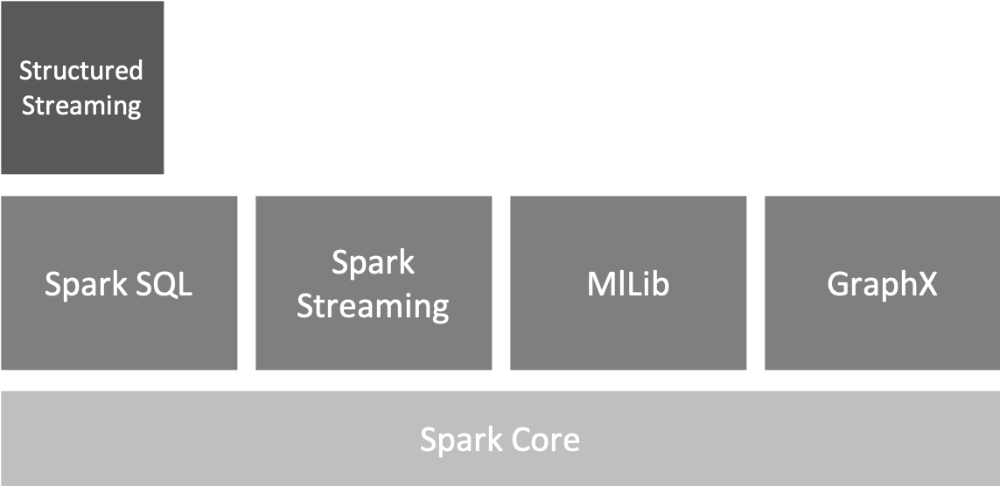
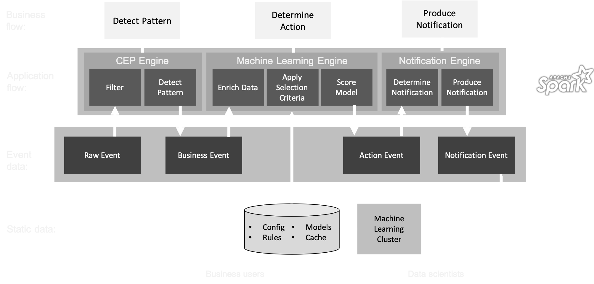

Streaming Analytics
with Scala and Spark Structured Streaming

Bas Geerdink | December 13, 2019 | Functional Scala
Who am I?
{
"name": "Bas Geerdink",
"role": "Technology Lead",
"background": ["Artificial Intelligence",
"Informatics"],
"mixins": ["Software engineering",
"Architecture",
"Management",
"Innovation"],
"twitter": "@bgeerdink",
"linked_in": "bgeerdink"
}
Big Data
- Volume
- Variety
- Velocity
Fast Data Use Cases
| Sector | Data source | Pattern | Notification |
|---|---|---|---|
| Finance | Payment data | Fraud detection | Block money transfer |
| Finance | Clicks and page visits | Trend analysis | Actionable insights |
| Insurance | Page visits | Customer is stuck in a web form | Chat window |
| Healthcare | Patient data | Heart failure | Alert doctor |
| Traffic | Cars passing | Traffic jam | Update route info |
| Internet of Things | Machine logs | System failure | Alert to sys admin |
Apache Spark libraries
Streaming Architecture
Spark-Kafka integration
- A Fast Data application is a running job that processes events in a data store (Kafka)
- Jobs can be deployed as ever-running pieces of software in a big data cluster (Spark)
- The basic pattern of a job is:
- Connect to the stream and consume events
- Group and gather events (windowing)
- Perform analysis (aggregation) on each window
- Write the result to another stream (sink)
Parallelism
- To get high throughput, we have to process the events in parallel
- Parallelism can be configured on cluster level (YARN) and on job level (number of worker threads)
val conf = new SparkConf()
.setMaster("local[8]")
.setAppName("FraudNumberOfTransactions")
./bin/spark-submit --name "LowMoneyAlert" --master local[4]
--conf "spark.dynamicAllocation.enabled=true"
--conf "spark.dynamicAllocation.maxExecutors=2" styx.jar
Hello speed!
// connect to Spark
val spark = SparkSession
.builder
.config(conf)
.getOrCreate()
// for using DataFrames
import spark.sqlContext.implicits._
// get the data from Kafka: subscribe to topic
val df = spark
.readStream
.format("kafka")
.option("kafka.bootstrap.servers", "localhost:9092")
.option("subscribe", "transactions")
.option("startingOffsets", "latest")
.load()
Event time
- Events occur at certain time ⇛ event time
- ... and are processed later ⇛ processing time

Out-of-orderness

Windows
- In processing infinite streams, we usually look at a time window
- A windows can be considered as a bucket of time
- There are different types of windows:
- Sliding window
- Tumbling window
- Session window
Windows

Window considerations
- Size: large windows lead to big state and long calculations
- Number: many windows (e.g. sliding, session) lead to more calculations
- Evaluation: do all calculations within one window, or keep a cache across multiple windows (e.g. when comparing windows, like in trend analysis)
- Timing: events for a window can appear early or late
Windows
Example: sliding window of 1 day, evaluated every 15 minutes over the field 'customer_id'. The event time is stored in the field 'transaction_time'
// aggregate, produces a sql.DataFrame
val windowedTransactions = transactionStream
.groupBy(
window($"transaction_time", "1 day", "15 minutes"),
$"customer_id")
.agg(count("t_id") as "count", $"customer_id", $"window.end")
Watermarks
- Watermarks are timestamps that trigger the computation of the window
- They are generated at a time that allows a bit of slack for late events
- Any event that reaches the processor later than the watermark, but with an event time that should belong to the former window, is ignored
Event Time and Watermarks
Example: sliding window of 60 seconds, evaluated every 30 seconds. The watermark is set at 1 second, giving all events some time to arrive.
val windowedTransactions = transactionStream
.withWatermark("created_at", "1 second")
.groupBy(
window($"transaction_time", "60 seconds", "30 seconds"),
$"customer_id")
.agg(...) // e.g. count/sum/...
Fault-tolerance and checkpointing
- Data is in one of three stages:
- Unprocessed ⇛ Kafka consumers provide offsets that guarantee no data loss for unprocessed data
- In transit ⇛ data can be preserved in a checkpoint, to reload and replay it after a crash
- Processed ⇛ Kafka provides an acknowledgement once data is written
Sink the output to Kafka
businessEvents
.format("kafka")
.option("kafka.bootstrap.servers", "localhost:9092")
.option("topic", "business_events")
.option("checkpointLocation", "/hdfs/checkpoint")
.start() // this triggers the start of the streaming query
Model scoring
- To determine the follow-up action of a aggregated business event (e.g. pattern), we have to enrich the event with customer data
- The resulting data object contains the characteristics (features) as input for a model
- To get the features and score the model, efficiency plays a role again:
- Direct database call > API call
- In-memory model cache > model on disk
PMML
- PMML is the glue between data science and data engineering
- Data scientists can export their machine learning models to PMML (or PFA) format
from sklearn.linear_model import LogisticRegression
from sklearn2pmml import sklearn2pmml
events_df = pandas.read_csv("events.csv")
pipeline = PMMLPipeline(...)
pipeline.fit(events_df, events_df["notifications"])
sklearn2pmml(pipeline, "LogisticRegression.pmml", with_repr = True)
PMML

Model scoring
- The models can be loaded into memory to enable split-second performance
- By applying map functions over the events we can process/transform the data in the windows:
- enrich each business event by getting more data
- filtering events based on selection criteria (rules)
- score a machine learning model on each event
- write the outcome to a new event / output stream
Openscoring.io
def score(event: RichBusinessEvent, pmmlModel: PmmlModel): Double = {
val arguments = new util.LinkedHashMap[FieldName, FieldValue]
for (inputField: InputField <- pmmlModel.getInputFields.asScala) {
arguments.put(inputField.getField.getName,
inputField.prepare(customer.all(fieldName.getValue)))
}
// return the notification with a relevancy score
val results = pmmlModel.evaluate(arguments)
pmmlModel.getTargetFields.asScala.headOption match {
case Some(targetField) =>
val targetFieldValue = results.get(targetField.getName)
case _ => throw new Exception("No valid target")
}
}
}
Thanks!
Read more about streaming analytics at:
Source code and presentation are available at: